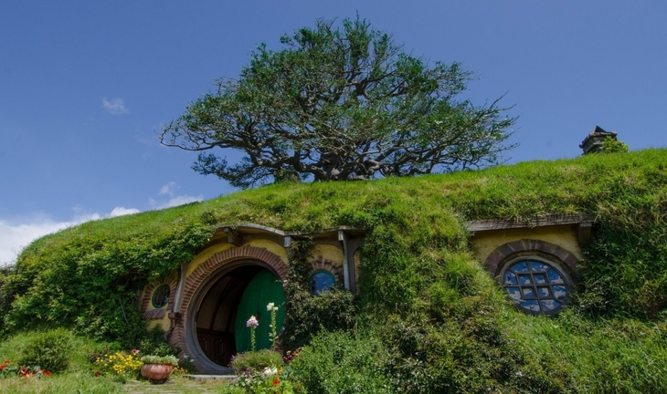
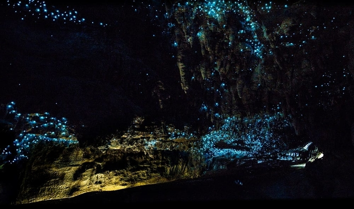
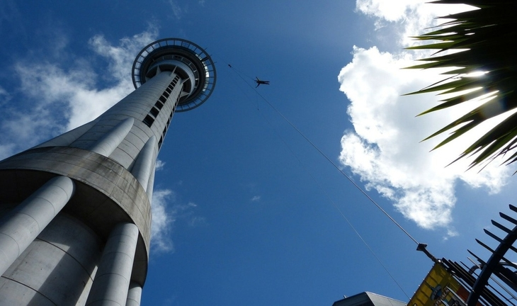
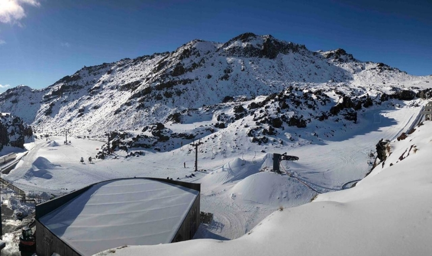
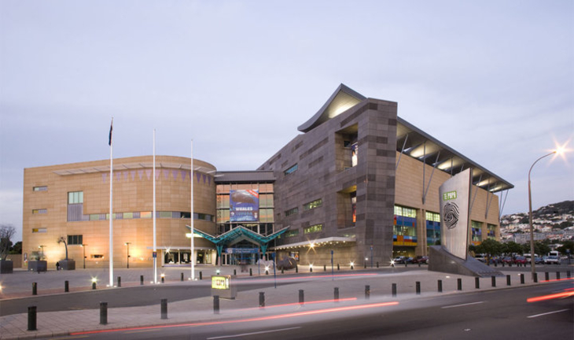
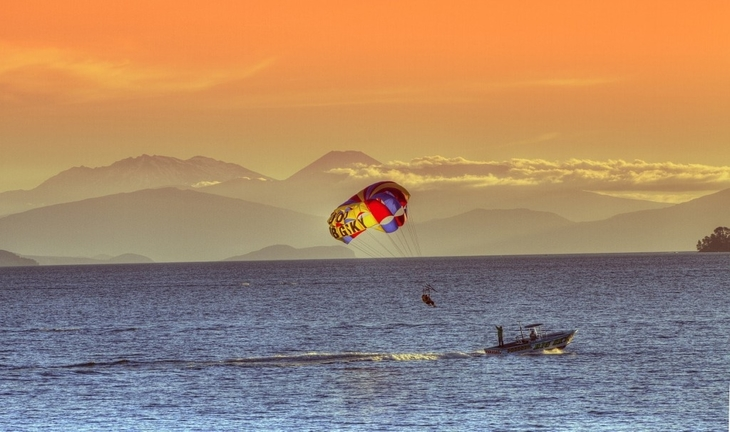

This page is dedicated to various tourist attractions
in New Zealand.
Below is a slideshow of various tourist attractions with brief descriptions about them.
1 / 6

Hobbiton Movie Set
The Hobbiton Movie Set is located in Matamata.
It is where the famous film trilogy 'The Lord of the Rings was filmed.
Tours of the movie set are available to be booked online.
2 / 6

Waitomo Glowworm Caves
The Waitomo Glowworm Caves is a cave located in Waitomo.
It is popular for the Arachnocampa luminosa, an exclusive glowworm species in New Zealand.
Tours are available through the waitomo caves.
3 / 6

Sky Tower
The Sky Tower is located in Auckland, the largest city in New Zealand.
It stands at 328 metres tall and gives off a view up to 80 kilometres.
There is also the Orbit 360°, a revolving restauraunt.
4 / 6

Mount Ruapehu
Mount Ruapehu is the largest active volcano in New Zealand
and has the highest point in the North Island.
Skiing and snowboarding is available in Ruapehu's skiing areas, Whakapapa and Turoa.
5 / 6

Museum of New Zealand Te Papa Tongarewa
The Museum of New Zealand Te Papa Tongarewa is located in Wellington.
It has many exhibits on display such as The Gallipoli Campaign in great detail.
There is no fee to enter the mueseum.
6 / 6

Lake Taupo
Lake Taupo is the largest lake by surface area in New Zealand.
It is well known for its quality of fish.
There are various activites to do such as bungy diving and fishing.
❮
❯